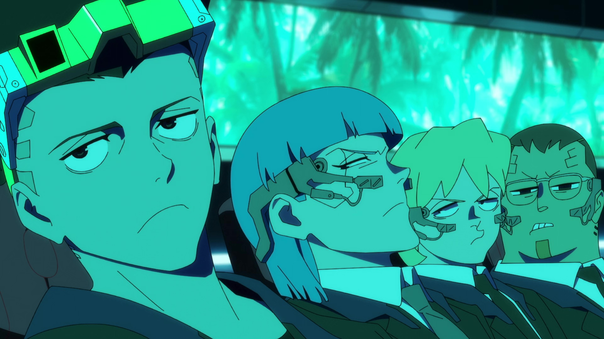
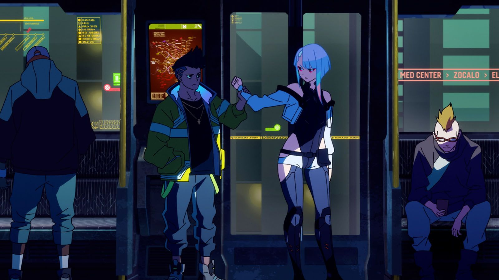
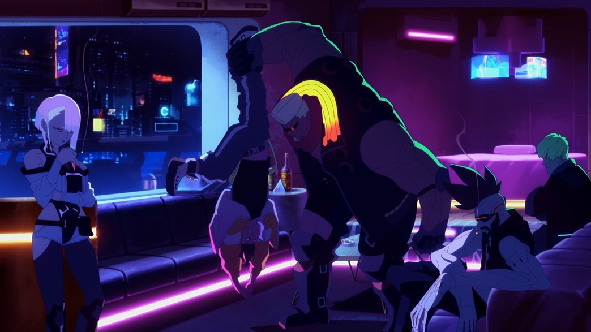
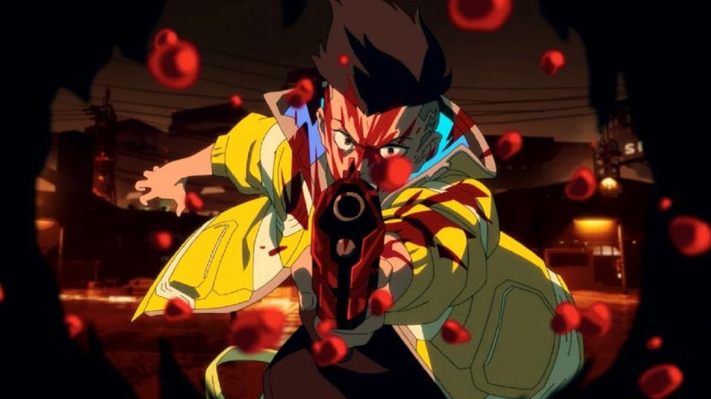
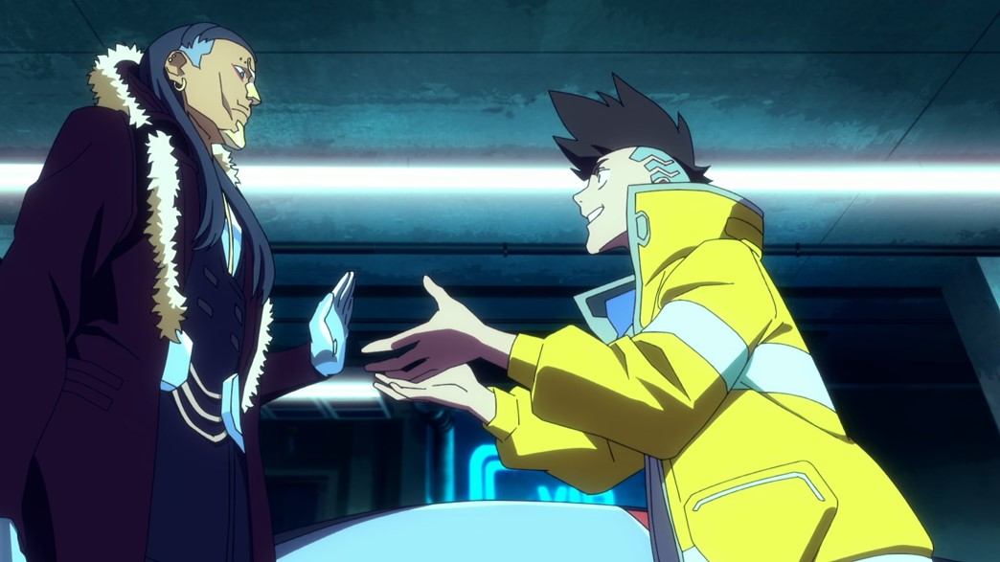
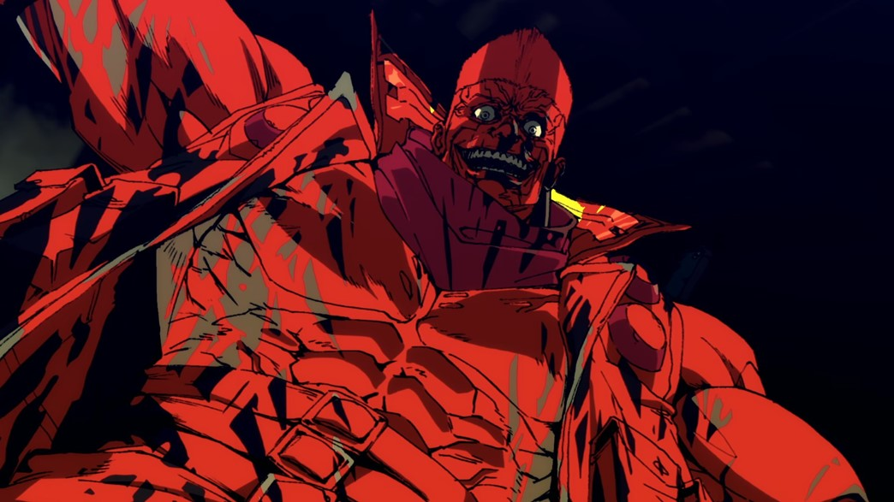
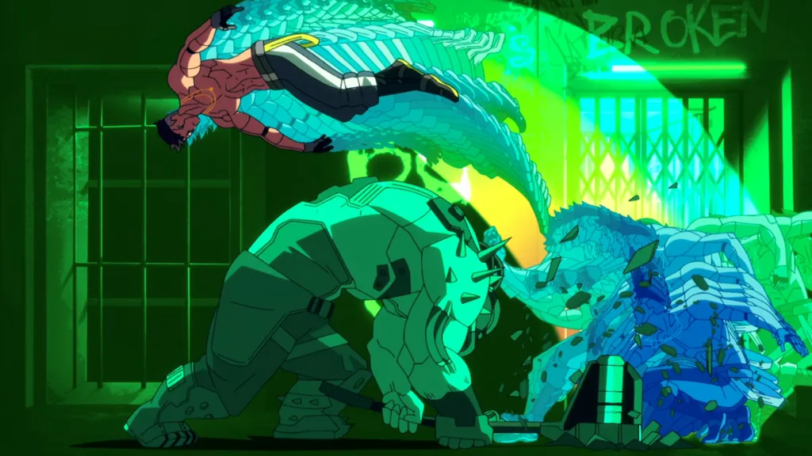
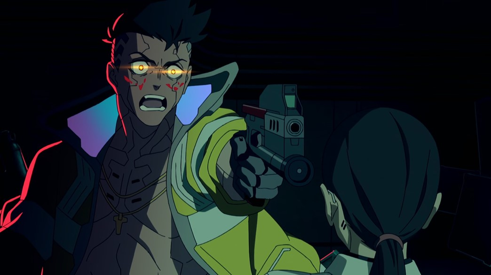
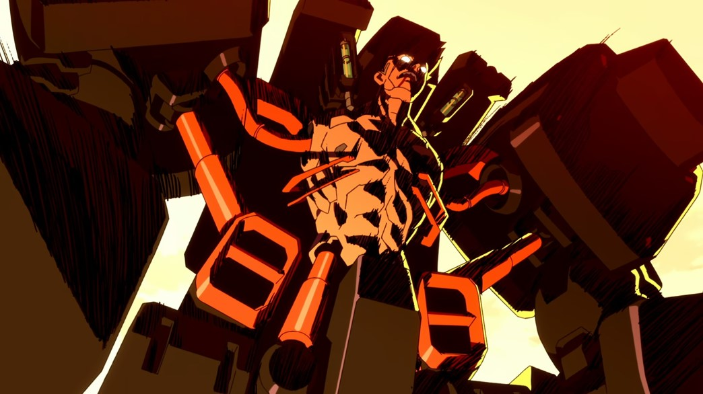
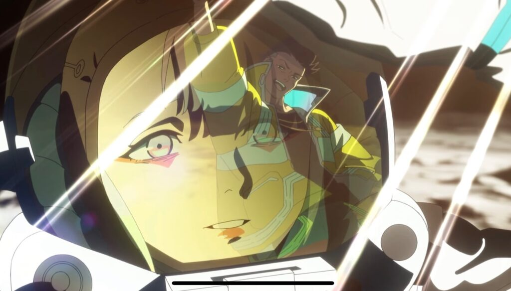

Resumen de los episodios
Capitulo 1 - «No quiero decepcionarte»
David Martinez es un joven que asiste a la prestigiosa Academia Arasaka a instancias de su madre Gloria, a pesar de que tienen dificultades económicas. Para seguir asistiendo a clase, David modifica ilegalmente su software cibernético para evitar pagar por una actualización requerida. Sin embargo, las modificaciones terminan colapsando el sistema de la escuela y Gloria acepta pagar los daños. De camino a casa, David discute brevemente con su madre antes de verse envueltos en una batalla callejera, dejando a Gloria gravemente herida. David logra acceder a la cuenta de ahorros de Gloria para pagar sus costos médicos y descubre que ella había robado un implante Sandevistan de grado militar. Después de ser agredido por su compañero de clase Katsuo, David descubre consternado que la condición de Gloria empeoró y murió en el hospital. David queda completamente arruinado y se encuentra con Doc, un ripperdoc local que rutinariamente le proporciona neurodanzas ilegales (grabaciones virtuales de los recuerdos de otros) y le solicita que instale el Sandevistan en su cuerpo.

Capitulo 2 - «Como un chico»
Doc accede a instalar el Sandevistan, que otorga a David mayor velocidad y reflejos. Con su nueva fuerza, David regresa a la escuela y se venga de Katsuo agrediéndolo a plena luz del día y como consecuencia, termina siendo expulsado de la Academia Arasaka. El padre de Katsuo, Tanaka, un ejecutivo de Arasaka Corporation, se da cuenta de que David puede utilizar el Sandevistan sin efectos secundarios aparentes, lo que lo convertiría en un valioso sujeto de prueba para la megacorporación. Mientras tanto, mientras David deambula sin rumbo fijo por la ciudad, se encuentra con una joven y hermosa carterista llamada Lucy que accede a tomarlo como socio. Después de una noche robando marcas, David se derrumba debido al uso excesivo de su Sandevistan. Lucy lleva a David de regreso con Doc, quien le receta inmunosupresores y le advierte que no use su Sandevistan más de dos o tres veces al día, aunque él nota que David parece tener una tolerancia notable. Lucy invita a David a su apartamento, donde le confiesa que su sueño es migrar fuera del mundo a una colonia lunar. Ella le muestra a David una reconstrucción virtual de la superficie lunar, pero resulta ser una estratagema para vender a David a una pandilla de edgerunners.

Capitulo 3 - «Banda criminal»
David se enfrenta a la pandilla, dirigida por un hombre llamado Maine, quien revela que Gloria le había vendido el Sandevistan y que él es un conocido suyo. David revela que es el hijo de Gloria y se ofrece a trabajar para Maine, demostrando su compatibilidad con Sandevistan. Impresionado y para honrar su amistad con Gloria, Maine permite que David se una a la pandilla. David luego regresa a casa, habiendo perdido su confianza en Lucy. Al día siguiente, David se encuentra con la pandilla y Maine le presenta a los otros miembros: Kiwi, Dorio y Pilar. Luego, David participa en un atraco para robar la navegación de Maxim Kuznetsov, un conductor de Arasaka Corporation. Rebecca hace aparición distrayendo a Maxim, dándole tiempo a David y Lucy para robar los datos que necesitan. Sin embargo, el plan sale mal y David y Lucy se ven obligados a robar la limusina de Maxim para obtener los datos de navegación. Maine los rescata de los motociclistas de Garras de Tygre que buscan reclamar la nueva recompensa que Maxim puso sobre sus cabezas e impresionado con la actuación de David, lo incorpora oficialmente a la pandilla. David también conoce al reparador de Maine, Faraday, que busca información sobre los movimientos de Tanaka. Luego, David recibe un mensaje de la Academia Arasaka, ofreciéndole dejarlo regresar, pero David los rechaza sin rodeos.

Capitulo 4 - «¡Qué suerte la tuya!»
Como nuevo recluta, David recibe capacitación e instrucción de los otros pandilleros, lo que incluye hacer mandados para Pilar y su hermana Rebecca, aprender a conducir desde Maine y trotar y pasar la noche con Lucy. También participa en varios trabajos, como eliminar a la banda de Charrateros y rescatar a Rebecca de la pandilla Maelstrom y ayuda a Lucy con más atracos. Se entera de que Lucy es una netrunner talentosa, pero no mucho más sobre su pasado. David le confía a Maine que siente algo por Lucy, pero está seguro de que ella no corresponde a sus sentimientos y tiene problemas para darse cuenta de cuánto debe confiar en ella. Eventualmente, David comienza a sentirse como en casa con la pandilla. Sin embargo, de camino a casa desde un bar, Pilar comienza a acosar a un vagabundo que orina en la calle. Se revela que el vagabundo tiene ciberpsicosis y de repente mata a Pilar con un lanzador de proyectiles oculta en el brazo. Desesperado por proteger a Lucy, David usa su Sandevistan para matar al ciberpsicópata. David lleva a Lucy a casa mientras la pandilla se encarga del desorden, donde Lucy revela que su sueño de ir a la Luna es genuino. David le promete a Lucy que la llevará a la Luna y ambos se besan.

Capitulo 5 - «Todas las miradas sobre mí»
La pandilla intenta encontrar más pistas sobre Tanaka, y Kiwi menciona que descubrió que él secretamente se entrega a bailes cerebrales ilícitos creados por "JK". David reconoce eso como el identificador de Jimmy Kurosaki, un famoso director de BD snuff que también sintoniza BD personalizados para clientes especiales, incluido Tanaka y les explica que Tanaka tendrá que estar presente en persona para la afinación. Al ver un potencial para emboscar a Tanaka, la pandilla intenta secuestrar a JK, pero él los engaña, captura a David y huye de la escena con Lucy y Dorio persiguiéndolos. JK somete a David a BD traumáticos en un intento de inducir ciberpsicosis antes de que Lucy y Dorio lo detengan y lo capturen. Sin otra opción, JK acepta atraer a Tanaka, pero no sin antes advertir a David que el Sandevistan inevitablemente lo hará volverse ciberpsicópata. Tanaka llega para reunirse con JK y posteriormente es capturado, pero no antes de que JK sea herido de muerte en el fuego cruzado. Con la llegada de una unidad del Trauma Team, la pandilla se ve obligada a evacuar rápidamente con Tanaka, mientras David sigue preocupado por las palabras de JK.

Capitulo 6 - «Chica en llamas»
Maine comienza a desarrollar signos de ciberpsicosis a medida que comienza a tener problemas para controlar sus implantes, se desmaya al azar, tiene alucinaciones y cambios de humor significativos. Esto culmina cuando él pierde el control de sí mismo y ataca a Kiwi mientras ella intenta piratear el software cibernético de Tanaka, hiriéndola gravemente. Lucy acepta tomar el lugar de Kiwi, pero solo con la condición de que Maine se mantenga alejado y David la acompañe. Cuando Lucy se sumerge en la mente de Tanaka, Tanaka recupera la conciencia y le ruega a David que lo deje ir, diciéndole que él fue el responsable de rescindir su expulsión de la Academia Arasaka y que todavía tiene un futuro allí, y que los edgerunners lo matarán después de que extraigan su información para atar cabos sueltos. Esto hace que David dude lo suficiente como para que el implante neural de Tanaka haga un cortocircuito, arriesgándose a matar a Lucy también. Dorio desconecta a Lucy de forma segura, pero su bloqueador fue desactivado y la unidad de Trauma Team ha recibido los signos vitales de Tanaka y están en camino con la policía de Night City. Maine envía a David y Lucy a su vehículo de escape, mientras que él y Dorio llevan a Tanaka para distraer a las autoridades. Sin embargo, durante la batalla, Maine comienza a sucumbir a su ciberpsicosis, lo que resulta en la muerte de Dorio cuando intenta protegerlo. David intenta rescatar a Maine de las fuerzas policiales armadas, pero solo puede mirar impotente cómo un Maine arrepentido se inmola a sí mismo junto con el cadáver de Dorio, así como el cuerpo de Tanaka. Todo lo que David puede hacer es huir con los brazos cibernéticos de Maine.

Capitulo 7 - «Más fuerte»
Algún tiempo después, David se convirtió en el nuevo líder del grupo edgerunner de Maine, después de haber recibido más implantes, incluidos los implantes de brazo de Maine, y convertirse él mismo en un edgerunner de renombre. Sin embargo, no ha podido convencer a Lucy de que se reincorpore a la tripulación. Después de completar con éxito un trabajo para la reparadora Wakako Okada para rescatar a un vip de la pandilla Maelstrom, Faraday se acerca a David, quien le ofrece un trabajo de Militech Corporation contra Arasaka Corporation como prueba para ver si es digno de heredar el último trabajo de Maine para recuperar el datos que Tanaka estaba ocultando. Faraday también solicita que David intente reclutar a Lucy nuevamente. Al regresar a casa, David habla con Lucy, queriendo saber más sobre su pasado. Ella revela que solía formar parte de un equipo especial de edgerunners de Arasaka Corporation criados y entrenados para profundizar en Old Net para recuperar datos perdidos. Sin embargo, el trabajo era extremadamente peligroso ya que los exponía a IA maliciosas y malware que mataron a gran parte del equipo. Finalmente, Lucy pudo escapar de Arasaka Corporation y terminó en Night City. También admite que, si bien antes solo se preocupaba por sí misma, ahora está más preocupada por la salud de David. Más tarde, Lucy mata a un agente de Arasaka Corporation que investiga datos sobre un sujeto de prueba que fue "borrado misteriosamente" de los registros de Tanaka.

Capitulo 8 - «Quédate»
Asumiendo el trabajo de Faraday, David asesina a un director de laboratorio de Arasaka Corporation, pero muestra signos de ciberpsicosis en el proceso. Mientras tanto, la Contrainteligencia de Arasaka está investigando las misteriosas muertes del personal de Arasaka Corporation. Creyendo que Militech Corporation está involucrado, organizan un intento de asesinato de Faraday, quien escapa por poco. Con Militech negándose a brindarle protección debido a su falta de resultados en la recuperación de datos en el proyecto ciberesqueleto de Arasaka Corporation, Faraday se pone en contacto con ella. Arasaka Corporation está dispuesto a perdonar a Faraday por la muerte de Tanaka, a cambio de que localice al netrunner responsable de ocultar los datos de Tanaka y matar a sus agentes. Mientras tanto, David continúa mostrando más síntomas de ciberpsicosis, además de sufrir un trauma por haber matado a una secretaria inocente que se parecía a Gloria, ya que la mujer también tenía un hijo. Doc recomienda que David reduzca la escala de sus implantes, solo para ser atacado por David, lo que hace poner agria su relación. Una vez más, David intenta reclutar a Lucy, pero ella insiste en que hay algo de lo que debe encargarse primero y David considera romper con ella. Lucy luego detecta a otro agente de Arasaka Corporation que busca los datos de Tanaka y se dirige a matarlo, solo para caer en una trampa tendida por Faraday y Kiwi.

Capitulo 9 - «Humanidad»
Después de interrogar a Lucy, Faraday y Kiwi descubren que Lucy ha estado ocultando activamente los datos de Tanaka sobre David como posible sujeto de prueba para el ciberesqueleto. Al darse cuenta de esto, Faraday planea ofrecer tanto a Lucy como a David a Arasaka Corporation para asegurar su puesto en la empresa. Para llevar a cabo esto, Faraday le asigna a David la misión de asaltar un convoy de Arasaka Corporation. David recluta la ayuda de Kiwi, Rebecca y Falco y logran apoderarse de la carga principal del convoy, que se revela al ciberesqueleto (siendo un ciberware similar a un mecha que reemplaza los brazos y las piernas de una persona). Luego llega una fuerza de Militech Corporation y gracias a un consejo de Faraday, quien tiene la intención de obligar a David a instalar el ciberesqueleto y usarlo para destruir la fuerza de Militech Corporation como una demostración de su poder. Kiwi escapa cuando Faraday se hace pasar por Lucy para engañarlo para que instale el ciberesqueleto. Lucy logra escapar brevemente y advierte a David sobre la duplicidad de Faraday antes de ser recapturada. Enfurecido, David usa el ciberesqueleto para aniquilar a la fuerza de Militech Corporation, a pesar del enorme número de víctimas que causa en su cuerpo y luego les dice a Rebecca y Falco que irán a rescatar a Lucy y vengarse de Faraday.

Capitulo 10 - «Mi luna, mi nombre»
David se abre camino a través de las fuerzas de Militech Corporation, Arasaka Corporation y MAXTAC mientras él, Rebecca y Falco se dirigen a la Torre Arasaka. Mientras tanto, la condición de David continúa deteriorándose a medida que se le acaban los inmunosupresores. Mientras tanto, Kiwi tiene dudas sobre trabajar con Faraday y decide cortar los lazos con él, por lo que manda agentes a matarla como un cabo suelto. Finalmente Kiwi es localizada por unos agentes y asesinada por uno de ellos. Antes de morir, en una forma de redimirse, Kiwi avisa a David y a los demás sobre la ubicación de Faraday y Lucy. David ataca la torre, mata a los guardias de Arasaka, rescata a Lucy e incapacita a Faraday. Al darse cuenta de que la situación se ha salido de su control, Arasaka Corporation despliega al cíborg Adam Smasher para acabar con David. Cuando David comienza a sucumbir a la ciberpsicosis, Lucy lo besa, devolviéndole la cordura. Durante la lucha, Faraday es derribado de la torre por Smasher, se cae y muere, luego mata a Rebecca, que esta última protegía a Lucy, David y Falco. David le pide a Falco que se asegure de que Lucy escape mientras él se queda atrás para mantener a raya a Smasher. A pesar de tener el ciberesqueleto, David no es rival para el experimentado Smasher, es derribado y termina siendo asesinado rápidamente, aunque no se arrepiente de saber que Lucy finalmente está a salvo. Algún tiempo después, Lucy cumple su sueño de viajar a la Luna, pero está abatida porque David no está allí con ella. Aunque ella se imagina una visión de él que tenía guardada de David, sientiendose como si él estuviera ahí con ella.
